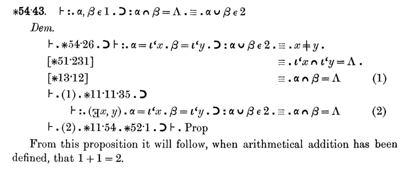

Mathematical logic is the branch of mathematics that takes mathematical reasoning itself as its object of study. Instead of proving theorems about numbers, groups or manifolds, it proves theorems about theorems: what it means for a sentence to be true in a structure, what it means for a sentence to be provable from axioms, how these two notions are related, and where the power of formal reasoning runs out. The subject was created between roughly 1879 and 1936 by Frege, Peano, Russell and Whitehead, Hilbert, Skolem, Gödel, Tarski, Church and Turing, and the results of that period — the completeness theorem, the compactness theorem, the incompleteness theorems, the undecidability of the halting problem — remain the backbone of every graduate course in the field.
The elementary course on logic dealt with statements, the connectives NOT, AND, OR and IF–THEN, quantifiers, the converse and contrapositive, and valid argument forms. Here we treat the same material the way a graduate text does. Formulas become precisely defined strings generated by a grammar; truth becomes a mathematically defined relation between structures and formulas; proof becomes a finite combinatorial object that can itself be studied, counted and encoded as a number. Once both sides are defined rigorously, the central questions of the subject can be stated and answered: is every valid formula provable (yes, by Gödel's completeness theorem), is every true statement of arithmetic provable from a reasonable set of axioms (no, by Gödel's incompleteness theorem), and can validity be decided mechanically (yes for propositional logic, no for first-order logic, by the theorem of Church and Turing).
We assume familiarity with proofs by induction, with countable and uncountable sets at the level of Cantor's diagonal argument, and with basic algebraic structures such as groups and ordered fields. No prior course in logic beyond the elementary one is needed. Proofs are given in full where they fit on a page; for the longer arguments (the incompleteness theorems, Cook–Levin) we give the complete architecture of the proof and prove every step that contains a genuine idea.
In this course, you will:
- 1.Define the syntax and semantics of propositional logic precisely and prove unique readability
- 2.Prove functional completeness of standard connective sets, classify the incomplete ones, and work with CNF and DNF
- 3.Build a natural deduction system and prove that it is sound
- 4.Prove the completeness and compactness theorems for propositional logic
- 5.Study resolution, Horn formulas, 2-SAT and the satisfiability problem
- 6.Define first-order languages, structures and Tarskian satisfaction, and study definability
- 7.Prove Gödel's completeness theorem by the Henkin method
- 8.Derive the compactness and Löwenheim–Skolem theorems and apply them to nonstandard models
- 9.Develop Turing machines, the halting problem and the undecidability of first-order validity
- 10.Understand Gödel numbering, the diagonal lemma and both incompleteness theorems, and Tarski's undefinability theorem
- 11.State and understand the Cook–Levin theorem and the theory of NP-completeness
- 12.Meet Russell's paradox, the axioms of ZFC, ordinals, cardinals and the independence of the continuum hypothesis
- 13.Work through 60 practice problems
Notation. We write ¬, ∧, ∨, →, ↔ for the connectives, ⊤ and ⊥ for the constants true and false, ⊨ for semantic consequence and ⊢ for derivability. Sets of formulas are denoted Γ, Δ, Σ, T; formulas are denoted φ, ψ, χ, θ. We write ℕ = {0, 1, 2, …} and identify truth values with 1 (true) and 0 (false).
Figures


Contents
Propositional Logic — Syntax and Semantics Lesson 2
Truth Functions, Functional Completeness and Normal Forms Lesson 3
Natural Deduction and Soundness Lesson 4
Completeness and Compactness for Propositional Logic Lesson 5
Resolution, Horn Formulas and the Satisfiability Problem Lesson 6
First-Order Languages, Structures and Satisfaction Lesson 7
Definability, Normal Forms and the Proof Calculus for First-Order Logic Lesson 8
Gödel's Completeness Theorem Lesson 9
Compactness and the Löwenheim–Skolem Theorems Lesson 10
Computability — Turing Machines and the Halting Problem Lesson 11
Gödel's Incompleteness Theorems Lesson 12
SAT, NP and the Cook–Levin Theorem Lesson 13
Set Theory — Russell's Paradox, ZFC, Ordinals and Cardinals Problem Set
60 problems Assessment
Randomly generated questions
Image sources
- Figure 1 · Young Kurt Gödel as a student in 1925. By Unknown author. Public domain. From Wikimedia Commons: https://commons.wikimedia.org/wiki/File:Young_Kurt_Gödel_as_a_student_in_1925.jpg
- Figure 2 · Principia Mathematica 54-43. By Alfred North Whitehead and Bertrand Russell. Public domain. From Wikimedia Commons: https://commons.wikimedia.org/wiki/File:Principia_Mathematica_54-43.png